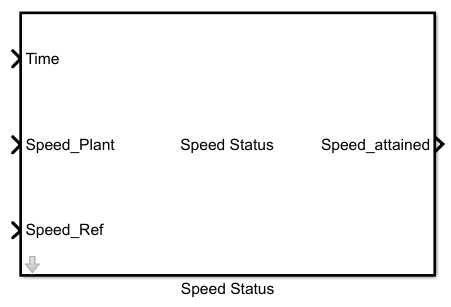

Description
This Matlab function block is used to get the status of reference and plant speed.

Input
1. Time is real simulation time,which is used here to generate delay.
2. Speed_Plant is the signal from the plant.
2. Speed_Ref is the reference signal which is given by the user.
Output
The output Speed_attained is the status generated from block when plant speed is in vicinity of referance speed.
Parameters

This block contains two configurable Parameters which are configured through the parameter initialization file:
- Status Tolerance
- It gives the vicinity value for plant speed,such that if plant speed is within the tolerance value status can be activated.
- Status Time Check
- Once plant speed reaches reference speed, speed attained signal will be activated after Status Time Check sec.
Working

Main aim of this block to geneters the status of speed attained by reference and plant speed.
It will take absolute difference of Speed_Plant and Speed_Ref as input signal, and will always check if the plant signal is in vicinity of reference signal.
This vicinity value is calculated by multiplying Status Tolerance with Speed_Ref.
Speed_attained gives logic 1 if both the speeds are in the vicinity otherwise its always 0
This status may be send to other functions to begin their executions.
File
This test is supported by two .m files, one for parameter initialization'Parameter_Initialization.m'
and other one to run the script 'Automatic_script_Temp.m'.
Test named 'Harness_Vary_Temp.slx' and can be found in the 'Sim_Arch\Harness' folder.